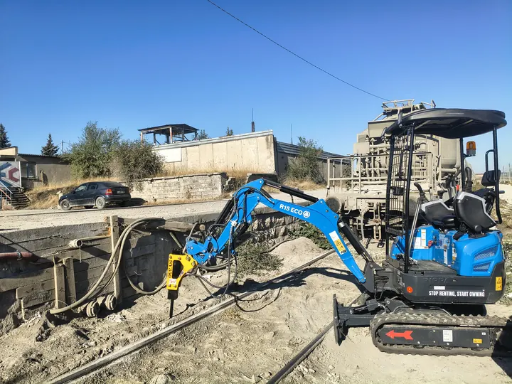
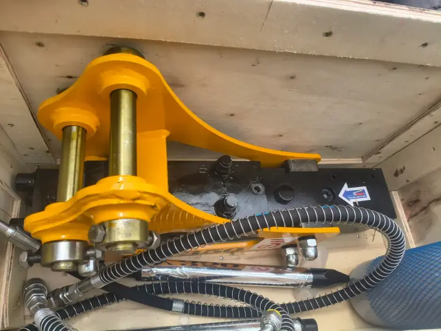
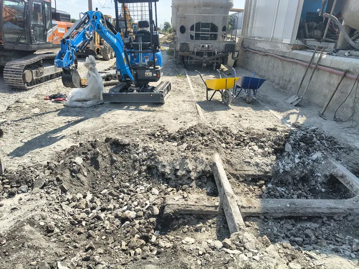

Чук
Хидравличен чук за разбиване на пътеки и бетон



Плъзнете настрани за още снимки от обекта.
С хидравличния чук на минибагера разбиваме стари бетонови пътеки, плочи, замазки и тънки основи в ограничени пространства.
Да — подходящо за
- Дворни пътеки и площадки
- Тънки бетонови основи и бордюри
- Локално премахване на бетон преди нов изкоп
Не — не предлагаме
- Тежко събаряне на къщи и масивни фундаменти
- Къртене на дебели стоманобетонни плочи без оглед
Честно казваме дали задачата е за 1.5-тонен минибагер или за по-тежка техника.
Цена
250–270 € за машиносмяна. Извозването на разбития бетон е за клиента. Цени.
Често задавани въпроси
Къртите ли къща или дебел стоманобетон?
Не. Чукът на 1.5-тонния минибагер е за дворни пътеки, плочи, замазки и тънки основи. Тежко събаряне на къщи и дебели стоманобетонни плочи изискват по-тежка техника — казваме го още при снимката или огледа.
За какво е подходящ чукът?
Разбиване на стари бетонови пътеки, плочи, бордюри и локално премахване на лек бетон преди нов изкоп в тесен двор.
Пратете снимка на обекта и населеното място — връщаме ориентир същия ден.